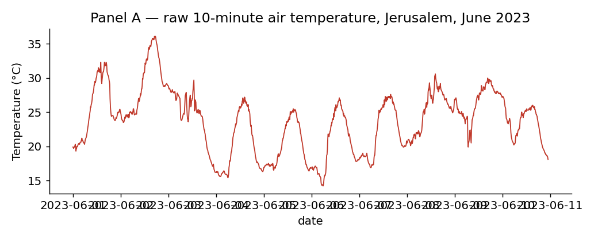
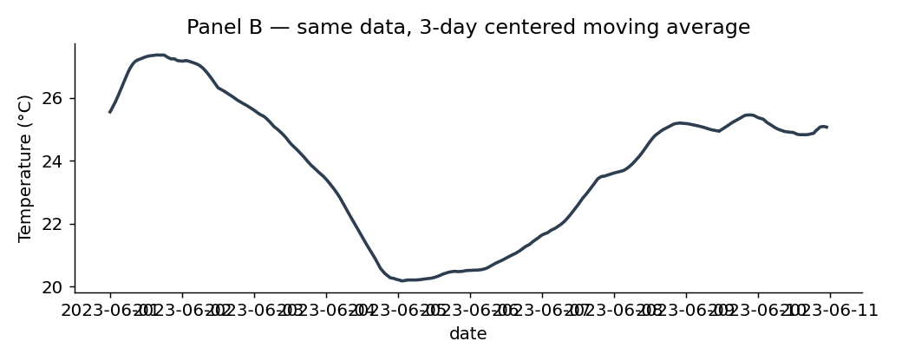
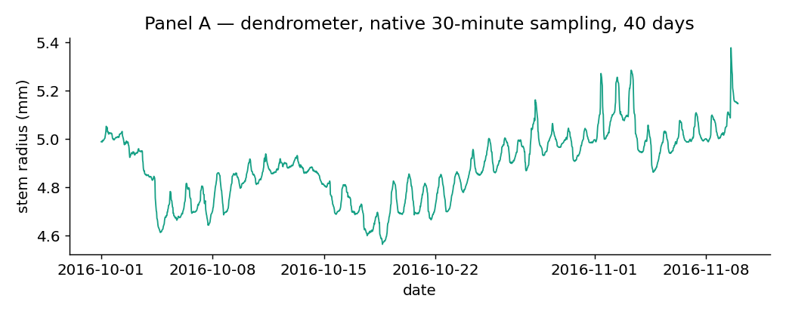
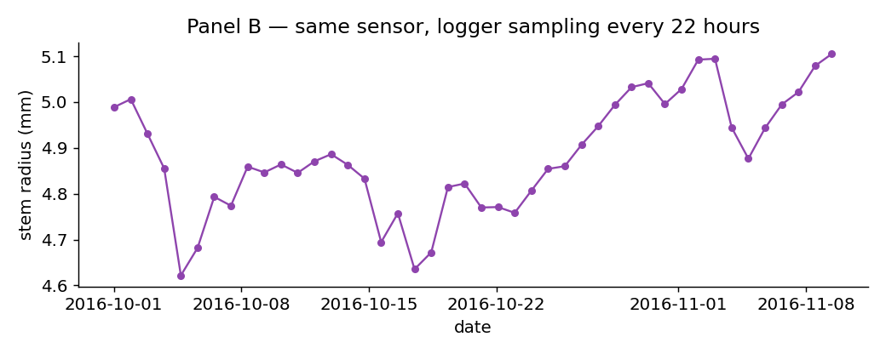
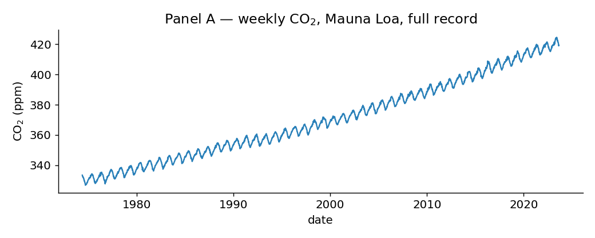
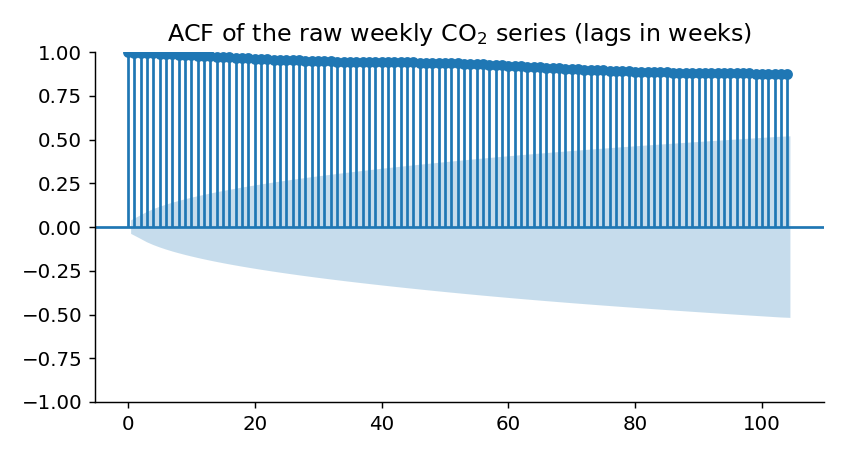
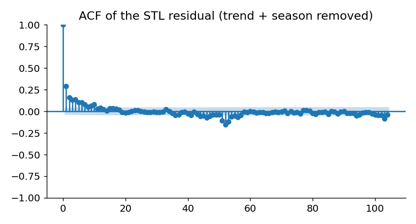
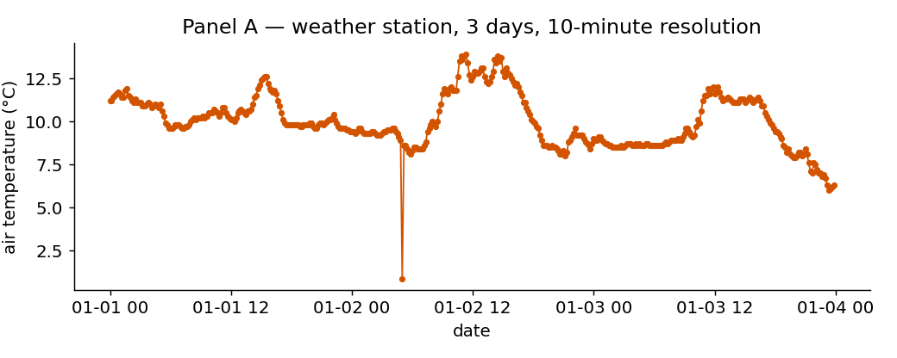
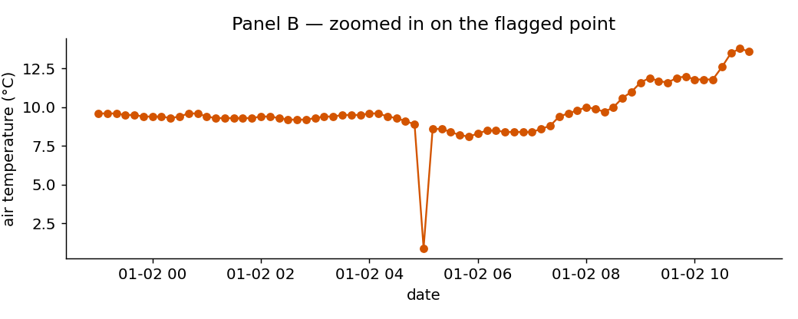

A closed-book, presential, no-AI format for Time Series Analysis (71106) — worked example for discussion, not a final instrument.
What this is
Four sample items, each built from real datasets already used elsewhere in this course (Jerusalem temperature, a dendrometer record, Mauna Loa CO₂, a weather-station log). Each item follows the same three-phase structure:
Predict — students see a real setup and commit to a prediction in writing, before seeing the result.
Observe — the actual result is revealed (in a real exam: a second printed sheet, or a screen uncovered after a fixed time).
Explain — students reconcile their prediction with what actually happened. This is the graded part, not the sketch itself.
Nothing here requires a computer, writing code, or arithmetic under time pressure. It requires having actually built an intuition for how these methods behave on real data — which is exactly what's hard to fake and hard to get from watching an LLM produce a clean answer.
Suggested timing: ~7–8 minutes per item once students are used to the format → all four items fit in a 30-minute closed slot; two items fit in a 15-minute pop quiz.
Click "instructor notes" under each item to see the intended reasoning, why it resists AI/rote answers, and a rough grading rubric. Data and the script that generated every figure below are in this same folder (generate_figures.py).
Panel A shows 10 days of real 10-minute air-temperature measurements from a Jerusalem weather station in June 2023 (the same dataset used in the stationarity unit).
Predict
A colleague wants to remove short-term noise and proposes a centered 3-day moving average. Before seeing the result: will the smoothed curve still show clear day/night temperature cycles, just with less noise? Sketch what you expect the smoothed curve to look like, directly on this panel.

Panel A — raw data (real measurements)
— reveal Panel B only now —
Observe

Panel B — the actual 3-day centered moving average
Explain
In 3–5 sentences: what happened, and why? Was your prediction right? What does this imply about choosing a smoothing window — is "bigger window = cleaner data" always true?
Instructor notes
What actually happens: a 3-day window is longer than the ~24h period of the signal itself, so the moving average doesn't just suppress noise — it averages entire day/night cycles together and erases them. Panel B shows only the slow multi-day trend; the diurnal cycle, which is the real signal students came to this course to study, is gone.
Why students get this wrong: the common (mis)intuition from earlier in the smoothing unit is "moving averages remove noise and keep the real pattern." This item exposes that the window size has to be chosen relative to the period of the phenomenon of interest — a fact usually stated once in lecture and never truly internalized until seen failing on real data.
Why it resists AI/rote answers: the "trick" isn't a fact you can look up — it only clicks if the student has an actual feel for what a moving average does mechanically to a periodic signal. An LLM can explain the general principle abstractly, but the exam asks the student to predict a specific, concrete, surprising outcome before being told the principle applies here.
Rough rubric (out of 4): 1 pt for a falsifiable, concrete prediction (even if wrong); 1 pt for correctly identifying that the diurnal cycle disappeared, not just "got smoother"; 2 pts for a correct causal explanation referencing window length vs. signal period.
Item 2 — Aliasing: a real daily cycle, sampled wrong
A dendrometer glued to a tree trunk records stem radius every 30 minutes; the stem visibly shrinks during the day (transpiration) and swells at night — a real ~24-hour cycle (data from the forecasting unit).
Predict
A field technician reprograms the logger's battery-saving mode, so instead of recording every 30 minutes, it now records once every 22 hours. The underlying tree physiology hasn't changed at all. Before seeing the new record: what will the resulting time series look like? Will it still look like a daily cycle, just coarser?

Panel A — the real signal, native 30-minute resolution
— reveal Panel B only now —
Observe

Panel B — same sensor, same tree, sampled every 22 hours
Explain
Panel B looks like it shows a slow ~11-day growth cycle. Is that a real biological signal? What actually produced this pattern, and what would you tell the technician to do differently?
Instructor notes
What actually happens: sampling a ~24h signal every 22h creates a beat pattern — the aliased period is 1/|1/24 − 1/22| ≈ 264 hours ≈ 11 days. The slow wave in Panel B is entirely an artifact of the mismatch between sampling interval and signal period; there is no real 11-day biological cycle.
Why students get this wrong: aliasing is usually taught abstractly via the Nyquist criterion and a textbook sine wave. Seeing it emerge from a real, physically meaningful signal (something they already understand — a tree's daily water-balance cycle) is a different and harder test than reciting the sampling theorem.
Why it resists AI/rote answers: naming "aliasing" is easy to look up; correctly computing the beat period and, more importantly, arguing convincingly why the "11-day cycle" is fake rather than a genuine (if surprising) botanical finding, requires actually reasoning about this specific pair of frequencies.
Rough rubric (out of 4): 1 pt for identifying the pattern as an artifact, not a real cycle; 1 pt for naming/describing aliasing correctly; 1 pt for a reasonable account of why beating occurs between two close frequencies; 1 pt for a sound practical recommendation (sample well above 2× the fastest frequency of interest).
Item 3 — Stationarity: what does a trend do to the ACF?
Panel A shows the full weekly Mauna Loa CO₂ record (the same dataset used in the seasonality unit): a strong upward trend plus a yearly wiggle.
Predict
Before computing anything: if you calculated the autocorrelation function (ACF) of this raw series, would it decay to near zero within a few weeks (like a short-memory process), or stay high for a very long time?

Panel A — the raw series
— reveal Panel B only now —
Observe

Panel B — ACF of the raw series (lags in weeks)

Panel C — ACF after removing trend and season (STL residual)
Explain
Why does the raw ACF (Panel B) stay near 1 for over a hundred weeks? Why does removing trend and seasonality (Panel C) change the picture so dramatically? If you fit an AR model directly on the raw series, what would go wrong?
Instructor notes
What actually happens: the strong trend means every value is close to its neighbor from weeks or months ago simply because the whole series is drifting upward together — that's not memory of a stochastic process, it's non-stationarity leaking into the ACF. Only after removing trend and season does the ACF reflect actual short-range dependence (decaying within a handful of weeks).
Why students get this wrong: the ACF is usually introduced on already-stationary toy series (white noise, AR(1)). Students rarely see what it looks like when you skip the stationarity check — which is precisely the mistake they're most likely to make on their own final-project data.
Why it resists AI/rote answers: "detrend before computing ACF" is a fact any LLM will state. What's being tested here is whether the student can look at Panel B and recognize on sight that a near-1 ACF at 100+ lags is a trend artifact rather than genuine long memory — a diagnostic reflex, not a fact.
Rough rubric (out of 4): 1 pt for identifying the trend (not memory) as the cause of the slow-decaying raw ACF; 1 pt for correctly describing what changed after detrending/deseasonalizing; 2 pts for correctly predicting the consequence of skipping this step before AR/ARIMA fitting (spurious apparent predictability, unstable or meaningless coefficients).
Item 4 — Outliers: real reading or sensor fault?
Panel A shows 3 days of real 10-minute air-temperature readings from a weather station in January 2022 (the same station used in the smoothing unit).
Predict
Look at Panel A. One reading has been circled by a teaching assistant as "worth checking." Before zooming in: what do you think is going on at that point, and what would you check first to decide whether to keep, correct, or discard it?

Panel A — 3 days of the record
— reveal Panel B only now —
Observe

Panel B — the flagged point, zoomed in
Explain
Is this a real, physically plausible temperature reading, or a sensor/transmission fault? What single number about this point (relative to its neighbors) makes you confident either way? If you had to run this series through an automated outlier detector before an ACF/forecasting analysis, would a fixed threshold (e.g. 3 standard deviations from the global mean) reliably catch this — why or why not?
Instructor notes
What actually happens: the flagged point is a synthetic fault deliberately inserted into a real background series for this exam (a decimal-place error: 8.8°C misrecorded as 0.88°C) — disclosed here, not to students. It is physically implausible (a ~8°C drop and immediate recovery within 10 minutes, in the middle of an otherwise smooth overnight cooling trend) and should be recognized as a fault, not weather.
Why students get this wrong: without practice, novices often default to a single rule ("outlier = far from the mean") learned from a lecture example, rather than reasoning locally: this value isn't extreme relative to the whole January record, but it's wildly implausible relative to its immediate neighbors and to physically reasonable rates of temperature change.
Why it resists AI/rote answers: the question isn't "define an outlier" (an LLM answers that instantly) — it's "look at this specific local context and decide," and specifically probes whether a naive global-threshold method would even catch it (a single 10-minute dip usually will not move a series-wide mean/std by much, so a global 3σ rule can miss exactly this kind of fault — a robust/local method, from the outliers unit, is needed).
Rough rubric (out of 4): 1 pt for correctly calling it a fault, not a real reading; 1 pt for a physically grounded justification (implausible rate of change, single-point spike-and-recovery); 2 pts for correctly reasoning about why a global-mean-based threshold might fail here, pointing toward local/robust methods (rolling median, rolling MAD) from earlier in the course.
Logistics for running this as a real exam
No laptops, no phones, printed panels. "Observe" panels can be printed on the back of the "predict" page, or held up on a screen at the front at a fixed time — either removes any dependency on AI or classroom devices.
Partial credit lives in the Explain phase, not the sketch. A wrong prediction that is reasoned about correctly after seeing the real result should score close to a correct prediction — the goal is diagnosing understanding, not testing psychic ability.
Rotate the specific dataset/parameters each semester. Same four "shapes" of surprise (smoothing destroys signal, sampling creates aliasing, trend inflates ACF, local vs. global outlier logic), different real dataset and specific numbers each year — keeps question banks from circulating while keeping prep effort low (change the CSV and window/threshold, not the pedagogy).
This maps cleanly onto existing course units: smoothing, frequency/time-lags (aliasing), stationarity, and outliers — i.e. it could be four short 15–20 minute in-class checkpoints spread across the semester rather than one 30-minute exam, if that fits better logistically with the lab sessions.